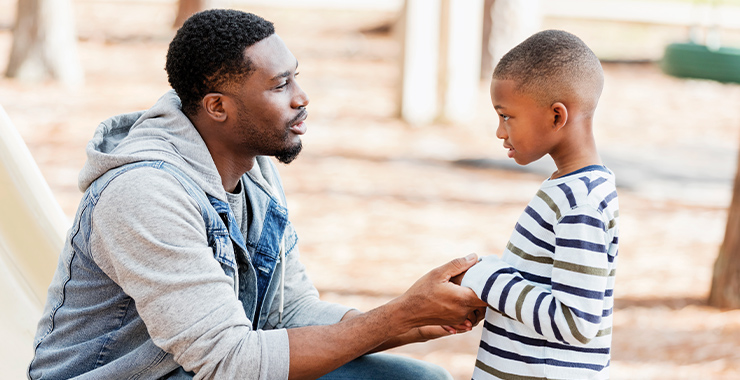

It is the recruitment or the kidnapping of children, to exploit them, whether it be sexual or physically. Oftentimes, the adults are those who are a trusted figure for that child. 41% of the time, the adults have familial connections to the child being trafficked. In these cases, the trafficker always benefits, whether it is financially or sexually, or another way. Oftentimes, the child is forced into labour and or forced into more horrible situations. And most often, children that have no trusted adult figures are targeted, whether it be that they are a migrant or a citizen of a country.
These adults will ususally target children online. The rise of online predators and trafficking is concerning. These adults will parade around as teenagers or someone of the same age as the child they’re talking to, but in reality, they’re ages older, and have far more sinister plans. Often, this leads to grooming, sextortion, capping, and more. They may also try to convince them to talk to them, or meet up for the hope of a job, or a better life.
As said before, these children are often neglected or stuck in poverty and violence. They are lured in by the hopes of a better live and or job, or are lured in because the person seems to be a trusted figure. Most victims find it hard to say anything or leave, because they don't know how to, and they trust the figure too much.
Approximately 40% of sex trafficking is on the internet. It is very common now, especially due to COVID and the rise of children using the internet often. It is harder to track down these cases, and often they go unreported. Facebook and Instagram, are large sites whose companies have said to be against human trafficking and working on their websites to be against it, but it seems to run rampant. All the children are simply looking for affirmation, for safety and love, and most of them are neglected, or stuck in poverty and violence. Because of the Internet, it is even more easy for predators and traffickers to find victims, and to gain money fast as well as exploit many others.
As a parent, you can be a trusted figure for that child. You can report this to another authority figure, such as the police. You can also report this to Cybertip.ca and helps raise awareness.

Awareness is by far the most important thing that can be done. Teach your children and other children how to be safe on the internet, and to not trust everything that someone else will say. Finally, provide a safe space for your child and other children who are struggling. Children need care and attention, and if you can be a place of trust and support, then there will be less of a chance they will be lured by older, predatory people.